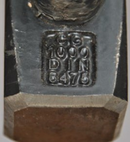
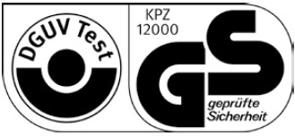
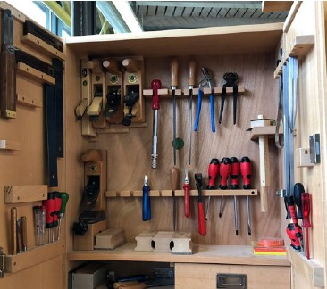
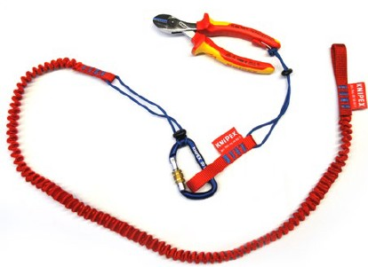

Vorgaben für die Bereitstellung und Benutzung von Arbeitsmitteln, wozu auch die Handwerkzeuge zählen, sind in der Verordnung für Sicherheit und Gesundheitsschutz bei der Verwendung von Arbeitsmitteln (Betriebssicherheitsverordnung – BetrSichV) enthalten. Beispiele:
Die Gefährdungsbeurteilung soll gemäß der BetrSichV bereits vor der Auswahl und der Beschaffung der Arbeitsmittel begonnen werden.
Bei der Arbeit mit Handwerkzeugen können Gefährdungen vom Handwerkzeug selbst, von den zu bearbeitenden Gegenständen, der Arbeitsweise und der Arbeitsumgebung ausgehen.
Allen Texten liegen die Anforderungen der BetrSichV zugrunde.
Die Themen:
Die Arbeitsaufgabe und das zu erreichende Arbeitsziel stehen am Beginn der Auswahl geeigneter Arbeitsmittel. Mit den Erfahrungen aus der Arbeitsplanung, dem Wissen der Führungskräfte und der Beschäftigten können – unter Berücksichtigung der Arbeitssicherheit – die für eine Aufgabe erforderlichen Handwerkzeuge ausgewählt werden. Dieser Prozessschritt ist bereits Teil der Gefährdungsbeurteilung.
Manche Aufgaben und Ziele lassen eine schnelle Wahl zu. Für komplexe Arbeitsaufgaben bietet sich die Aufstellung einer Checkliste zur endgültigen Festlegung der konkreten Handwerkzeuge an:
Mit diesen Informationen kann ein Handwerkzeuglieferant die Bedarfsabsicht in der Bestellung schnell erkennen und seine Kenntnisse zur Beratung anbieten, Neuerungen vorstellen oder auf andere Arbeitsverfahren hinweisen. Oft sind dem Werkzeughandel einschlägige Normen bekannt, die für die Auswahl gute Informationen bieten. So sind in Normen Anforderungen an Form, Werkstoff und Qualität von Handwerkzeugen beschrieben. Die Herstellung eines Werkzeugs nach den Normvorgaben kann als ein Qualitätskriterium für die Beschaffung genutzt werden. Einige Handwerkzeuge sind mit der Norm gekennzeichnet (Abbildung 1). Andere führen die Norm auf der Verpackung auf. Mit dieser Kennzeichnung gibt die Herstellfirma an, dass die in dieser Norm aufgeführten Anforderungen eingehalten werden.

Abb. 1 Eingeprägte Norm an einem Fäustel 1
In Normen zu technischen Lieferbedingungen, wie bei der DIN 1193 für Hämmer aus Stahl oder DIN 7284 für Feilen und Raspeln, sind Anforderungen an diese Werkzeuge enthalten, aus denen sich Hilfen für verbindliche Forderungen an die Lieferfirmen ableiten lassen.
Zu den beschriebenen Handwerkzeugen werden Beispiele für Normen genannt. Darunter können auch Normen sein, die zwar Qualitätskriterien benennen, aber zurückgezogen worden sind. Da sich Herstellende und Vertreibende für ihre Werkzeuge auch auf zurückgezogene Normen berufen, sind auch diese als Qualitätskriterium weiter nutzbar.
Ein weiteres Qualitätsmerkmal ist das Zeichen "GS-geprüfte Sicherheit", das von Prüfstellen vergeben wird. Diesen Prüfstellen ist von der "Zentralstelle der Länder für Sicherheitstechnik" (ZLS) die Befugnis erteilt worden.
Wer Handwerkzeuge herstellt oder einführt, weist mit dem GS-Zeichen darauf hin, dass er eine Bescheinigung über eine erfolgreich durchgeführte, und regelmäßig aktualisierte Prüfung, in Bezug auf die Arbeitssicherheit des gekennzeichneten Handwerkzeugs, besitzt (Abbildung 2).

Abb. 2 GS-Zeichen
Bekannt ist auch das Zeichen des deutschen Fachverbands Werkzeugindustrie "Deutsches Werkzeug" (Abbildung 3). Der Aufkleber dokumentiert, dass das Werkzeug seine qualitätsbegründenden Produktionsschritte in Deutschland erhalten hat und damit die Ursprungskennzeichnung "Made in Germany" zu Recht trägt.
Abb. 3 Zeichen "Deutsches Werkzeug"
Nicht für alle Aufgaben sind geeignete Werkzeuge am Markt verfügbar. In diesen Fällen lassen Arbeitgebende Arbeitsmittel in eigener Verantwortung für die Verwendung im eigenen Betrieb herstellen. Das ist grundsätzlich möglich. Hinweise für das Vorgehen finden Sie in der Technischen Regel für Betriebssicherheit TRBS 1111 "Gefährdungsbeurteilung". Wer Arbeitsmittel selbst herstellt, übernimmt nach der TRBS 1111 auch die Verantwortung dafür, dass die Beschaffenheit dieser Arbeitsmittel den geltenden Anforderungen genügt und besonders die Anforderungen der BetrSichV während der Verwendung dieser Arbeitsmittel erfüllt werden. Auf diese Weise können Arbeitssicherheit und Gesundheitsschutz über die Gefährdungsbeurteilung, die die Schutzzielanforderungen der BetrSichV sichern muss, gewährleistet werden. Die Qualität des selbst hergestellten Werkzeugs wird dann über die Fortschreibung der Gefährdungsbeurteilung gesichert.
Sicheres und produktives Arbeiten setzt voraus, dass die verwendeten Handwerkzeuge für den Einsatzzweck und für die Menschen geeignet sind.
Das Handwerkzeug muss der menschlichen Hand "gefallen". Handwerkzeuge sind daher so zu gestalten, dass die Hand sie sicher und bequem greifen kann. Ergonomisch geformte Griffe unterstützen in der Weise, dass unterschiedlich große Hände immer einen sicheren Halt finden und mit möglichst geringem Kraftaufwand die Arbeitsaufgabe ermüdungs- und verletzungsfrei durchführen können, wozu auch eine gerade Handgelenkstellung gehört. Mit der Griffgestaltung sollte die Handdominanz (Rechts- bzw. Linkshändigkeit) ebenfalls berücksichtigt werden.
Ergonomie der Arbeit mit Handwerkzeugen soll immer auch die optimalen Einsatzbedingungen einschließen. Die Fixierung eines Werkstücks in günstiger Höhe trägt zu einer guten Körperhaltung bei und macht die Ausführung sicherer.
Auch die Arbeitsbedingungen wie ausreichender Bewegungsraum und Beleuchtung sollten für die Arbeitsausführung angemessen gestaltet werden.
Die Arbeit beginnt mit dem sicheren Greifen des für die Aufgabe geeigneten Handwerkzeugs. Deshalb lohnen sich Ordnung und eine gute Sortierung. Das Fehlen von Werkzeugen wird mit einem Blick erfasst.
Auf Baustellen ist ein Ordnungsschema nicht so klar vorgegeben wie in der Werkstatt. Dort liegt das Werkzeug häufiger vermischt, ohne jede Ordnung. Mit Hilfe von Werkzeugtaschen, Werkzeugboxen (System-Werkzeugkoffern) kann aber auch dort Ordnung "einkehren". Außerdem erleichtern die Behälter den Transport und ermöglichen einen sinnvollen Einsatz von (Sack-) Karren und die Handwerkzeuge sind darin geschützt.

Abb. 4 Ordnung im Werkzeugschrank
Sind Gerüste zu besteigen, können Werkzeugrucksäcke oder Werkzeugtaschen (am Griff oder an der Schulterschlaufe) mitgenommen werden und mindestens eine Hand kann immer die Leiter fassen. Gute und sinnvolle Verteilung der Werkzeuge auf mehrere Taschen/Boxen hilft, das Gewicht auf 10 kg zu begrenzen.
Werden am eigentlichen Arbeitsort nur wenige Werkzeuge aus der Box benötigt, können sie in dafür vorgesehenen Taschen der Kleidung, Gürteltaschen oder Schlaufen getragen werden.
An hoch gelegenen Arbeitsplätzen, zum Beispiel während Reparaturarbeiten auf dem Bau, sind Werkzeuge gegen Absturz mit zum Beispiel Fangleinen zu sichern (Abbildung 5).

Abb. 5 Seitenschneider an einer Verliersicherung
Jedes Handwerkzeug hat seinen Verwendungszweck und ist für den damit verbundenen Kraftaufwand vorgesehen. Der fachgerechte Umgang mit Handwerkzeugen und deren bestimmungsgemäßer Gebrauch setzt Ausbildung, Übung und Unterweisung voraus:
Grundsätzlich sind vor der Verwendung der Werkzeuge eine Inaugenscheinnahme und eine Funktionskontrolle erforderlich.
Handwerkzeuge bedürfen regelmäßiger Pflege, Wartung und Instandhaltung, um ihre Funktionstüchtigkeit zu erhalten und die Arbeitssicherheit während des Gebrauchs zu gewährleisten. Die Arbeit mit unzureichend gepflegten Werkzeugen mindert nicht nur die Qualität der Arbeit (verformte Schraubenköpfe, verschmutzte und beschädigte Oberfläche bei Werkstücken, …). Sie birgt Verletzungsgefahren besonders während der Anwendung (Abrutschen vom Werkstück, Splitterbildung, …).
Die Wartung beginnt schon mit der Inaugenscheinnahme und Funktionskontrolle vor der Verwendung. Festgestellte Mängel sollten sofort fachgerecht beseitigt werden (Reinigung, Schärfen, …). Ist eine sofortige Beseitigung des Mangels nicht möglich, muss mit Fachkunde entschieden werden, ob auf die weitere Verwendung aus Sicherheitsgründen, bis zur ordnungsgemäßen Instandsetzung, verzichtet werden muss.
Zum Abschluss der Arbeiten sollten immer die Reinigung, die Inaugenscheinnahme und eine Funktionskontrolle der benutzten Werkzeuge gehören. Zu diesem Zeitpunkt erkannte Mängel sollten zum Anlass genommen werden, die Werkzeuge vor dem nächsten Einsatz zu warten und, falls erforderlich, instand zu setzen oder zu ersetzen.
Reinigung, Pflege, Wartung, Prüfung und Instandsetzung von Handwerkzeugen sind ein wichtiger Teil der Prävention und am besten durch betriebliche Vereinbarung zu regeln:
Wer ist wann wofür verantwortlich,
was wird repariert und was nicht?
Häufig wird das ("eigene") Werkzeug in personengebundene Verantwortung übergeben. Die nötigen Kenntnisse für Reinigung, Pflege, Wartung, Prüfung und Instandsetzung müssen dann aber auch zusammen mit den Handwerkzeugen "übergeben" werden.
Spezialwerkzeuge werden häufig in die Verantwortung einer Person gegeben und von ihr gepflegt, gewartet, instandgesetzt und bei Bedarf stellt diese Person auch die Forderung nach Neubeschaffung. Die Ausgabe und Rücknahme der Werkzeuge ist dann auch von dieser Person mit Sicht- und Funktionskontrollen zu verbinden.
Nicht nur für die Verwendung, sondern auch für die Instandhaltung ist es wichtig, dass sie fachgerecht durchgeführt wird. Instandhaltung ist daher ein wesentlicher Teil innerhalb der Ausbildung und Unterweisung für den Umgang mit Handwerkzeugen. Vor allen Dingen muss geklärt sein, welche Reparaturen nicht erfolgen dürfen (an gehärteten Werkzeugen, an verformten Werkzeugen, unwirtschaftliche Reparaturen, …).